КОМАНДА ИНСТИТУТА
Люди, которым
вы доверяете здоровье.
Специалисты ИТВМ: образование, профессиональный опыт и направления работы.
29 специалистов в основном каталоге института. Выберите врача, чтобы познакомиться с его профессиональным опытом.

Десятерик Александр Евгеньевич
Главный врач института традиционной восточной медицины.
Профиль специалиста ↗
Королёва Оксана Михайловна
Руководитель департамента по науке и инновациям. К. М. Н. Доцент.
Профиль специалиста ↗
Шахова Марина Александровна
Врач гинеколог-репродуктолог высшей квалификационной категории, д.м.н., профессор.
Профиль специалиста ↗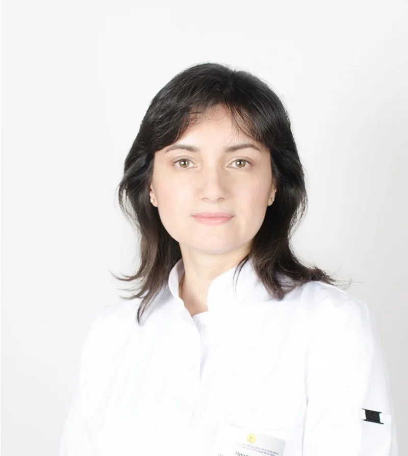
Нечаева Ирина Анатольевна
Врач венеролог-дерматолог высшей квалификационной категории, д.м.н.
Профиль специалиста ↗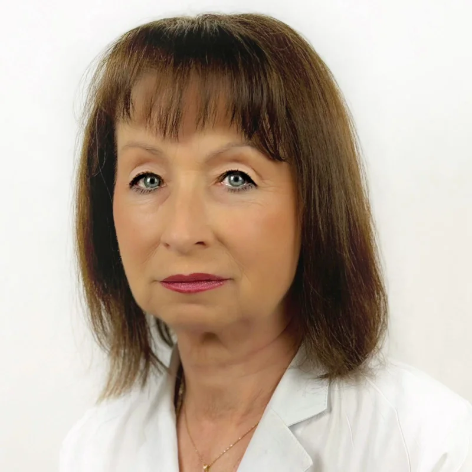
Алексеева Марина Михайловна
Врач гинеколог-эндокринолог высшей квалификационной категории.
Профиль специалиста ↗Добрецов Константин Григорьевич
Доктор медицинских наук, специалист в области клинической ольфактологии, ЛОР-хирург высшей категории
Профиль специалиста ↗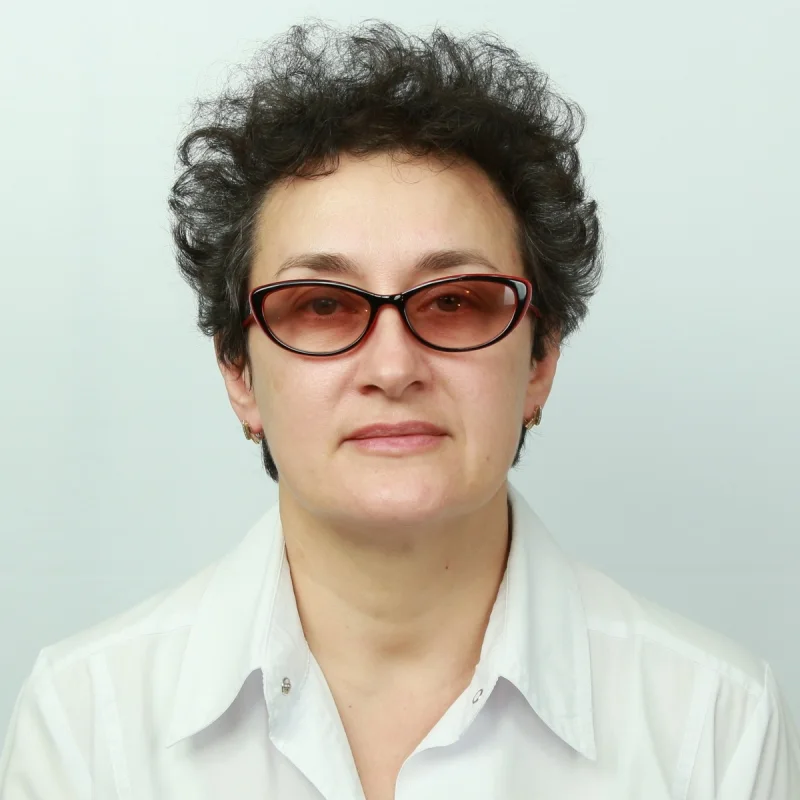
Чабан Татьяна Николаевна
Врач гирудотерапевт высшей квалификационной категории.
Профиль специалиста ↗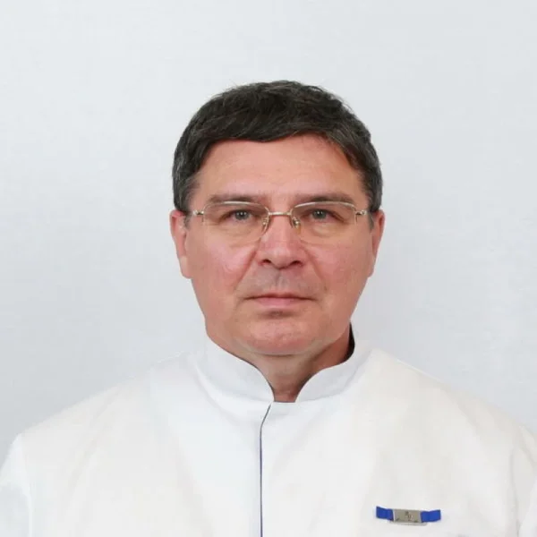
Панов Геннадий Александрович
Невролог, рефлексотерапевт, мануальный терапевт
Профиль специалиста ↗
Волкова Любовь Прохоровна
Врач офтальмолог, д.м.н.
Профиль специалиста ↗
Баша Татьяна Алексеевна
Врач рефлексотерапевт. Специалист по Су-джок терапии.
Профиль специалиста ↗
Вандышев Валентин Игоревич
Врач рефлексотерапевт. Специалист по традиционной китайской медицине и восточной косметологии.
Профиль специалиста ↗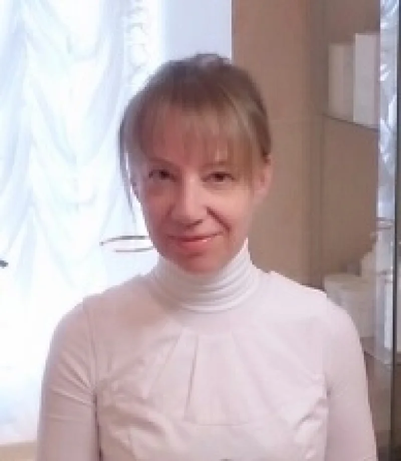
Акутса Татьяна Дмитриевна
Врач косметолог.
Профиль специалиста ↗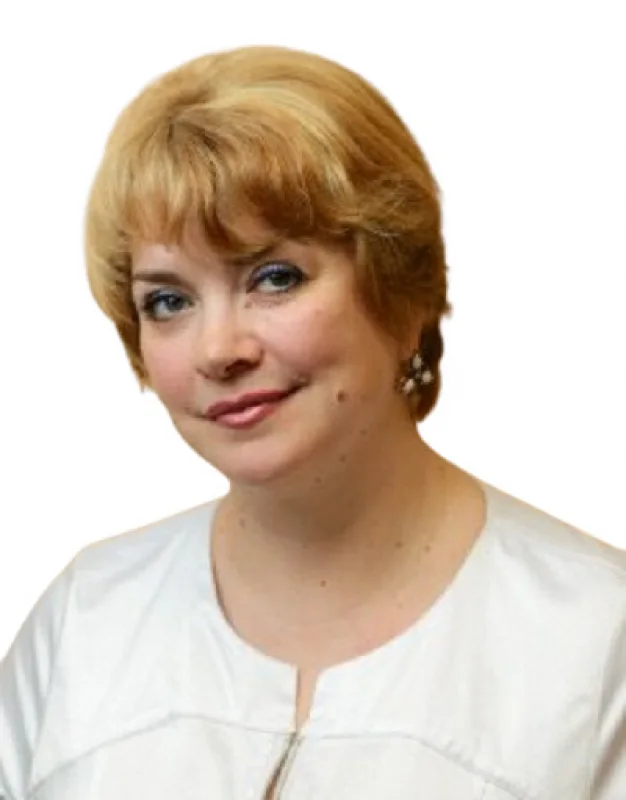
Бахтина Алла Борисовна
Врач УЗИ
Профиль специалиста ↗Бывальцев Вячеслав Олегович
Врач аюрведы, остеопат, кинезиолог
Профиль специалиста ↗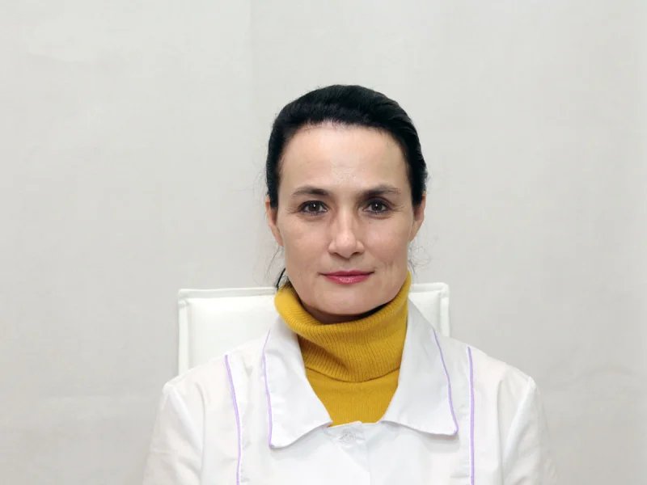
Гудкова Светлана Владимировна
Специалист по медицинскому и общему массажу.
Профиль специалиста ↗
Гуреева Кира Анатольевна
Врач гастроэнтеролог высшей квалификационной категории.
Профиль специалиста ↗Иванова Дарья Александровна
Гинеколог-хирург
Профиль специалиста ↗
Искандарова Наталия Александровна
Врач терапевт высшей квалификационной категории, специалист по вопросам нутрициологии и превентивной медицины.
Профиль специалиста ↗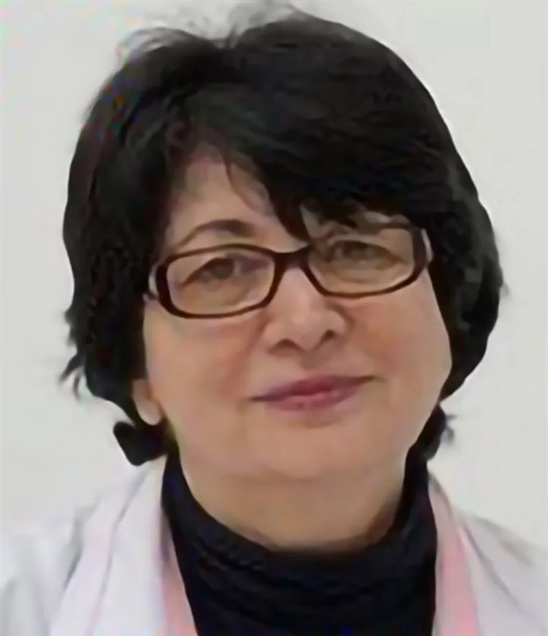
Каирова Альбина Хасановна
Врач невролог, специалист по КМЭ.
Профиль специалиста ↗
Лоскутов Сергей Владимирович
Массаж, реабилитация
Профиль специалиста ↗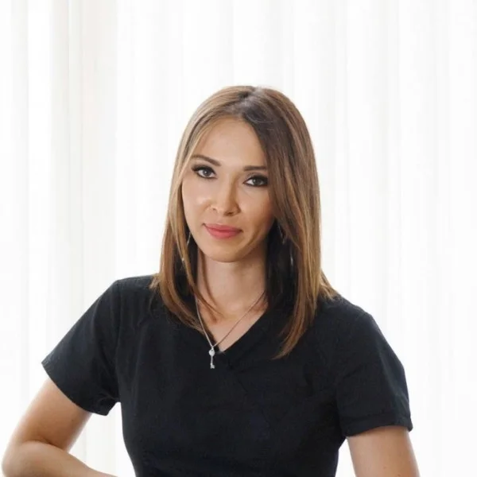
Маневская Юлия Бариевна
Врач акушер-гинеколог, хирург
Профиль специалиста ↗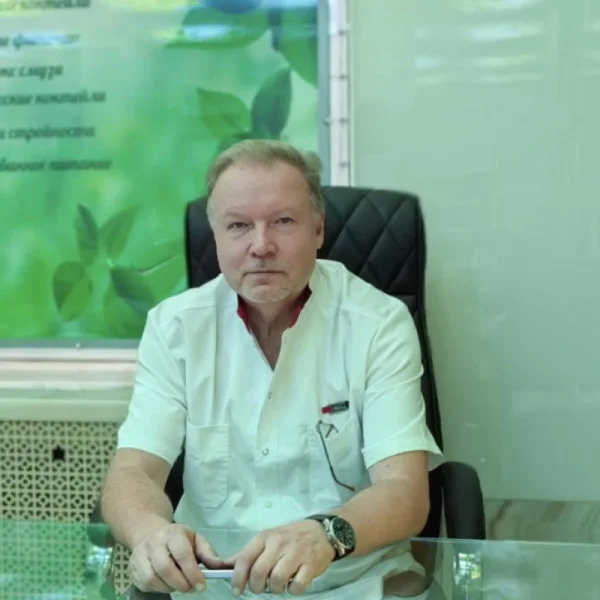
Минаенков Александр Сергеевич
SPA-услуги
Профиль специалиста ↗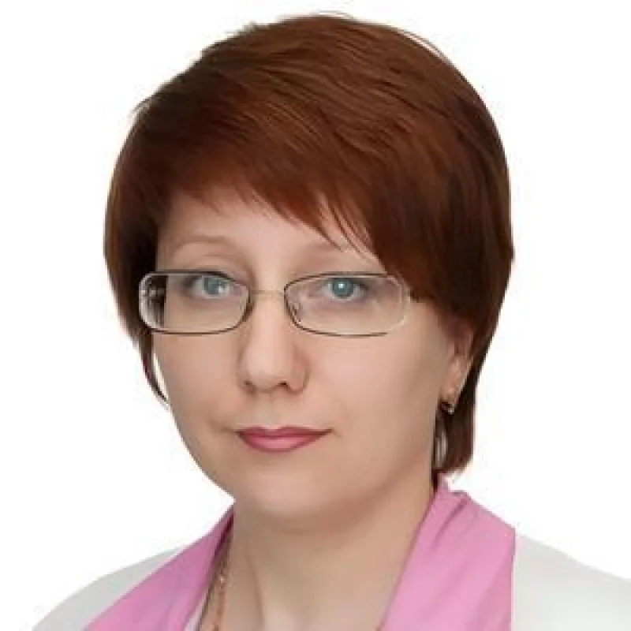
Олейник Наталия Павловна
Врач дерматолог высшей квалификационной категории, венеролог, трихолог.
Профиль специалиста ↗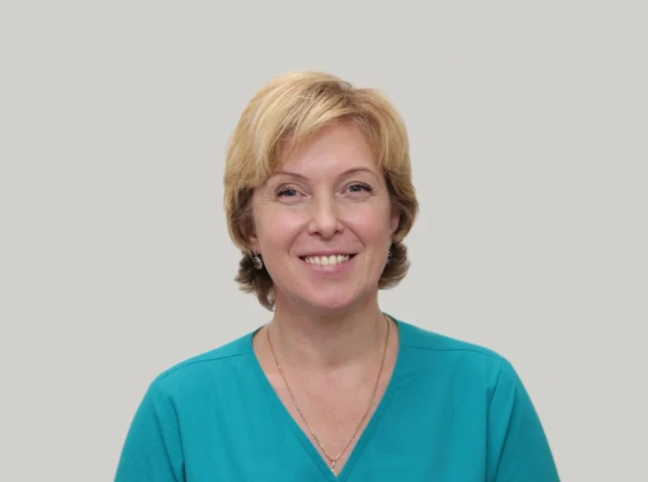
Покладова Людмила Вячеславовна
Врач офтальмолог (детский), рефлексотерапевт.
Профиль специалиста ↗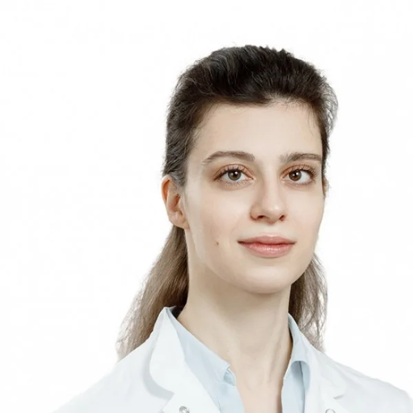
Соболева Виктория Александровна
Аллерголог
Профиль специалиста ↗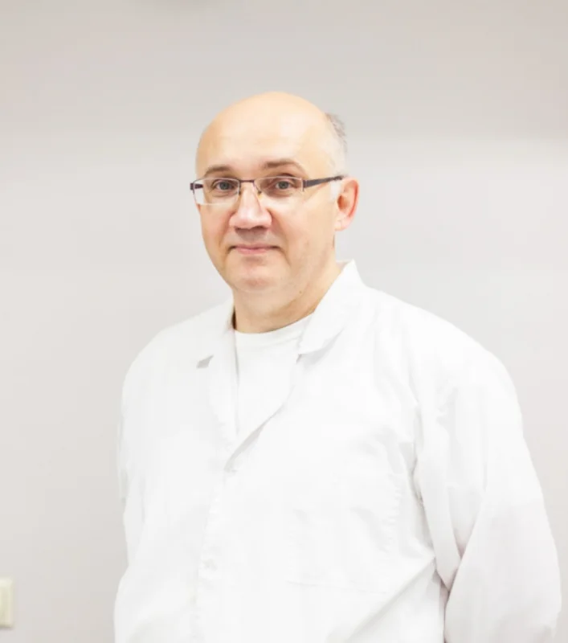
Чекунов Олег Владимирович
Мануальный терапевт, кинезиолог, реабилитолог, физиотерапевт
Профиль специалиста ↗
Шаламова Юлия Анатольевна
Клинический психолог, специалист нейропсихологической диагностики и реабилитации; ТЭС-терапия
Профиль специалиста ↗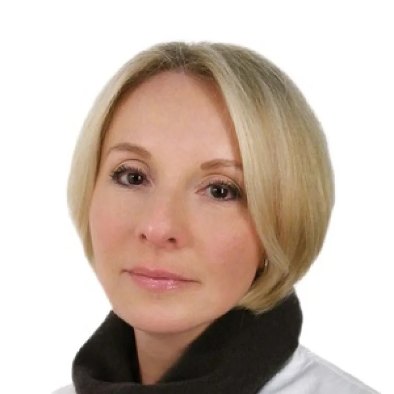
Шубина Елена Александровна
Врач УЗИ
Профиль специалиста ↗
Шаков Исмаил Магометович
Дерматовенеролог, к.м.н.
Профиль специалиста ↗Доступность приёма и расписание выбранного специалиста уточняйте у администратора.
Материалы института: itvm.ru ↗ · Информация на 26 октября 2026 года.